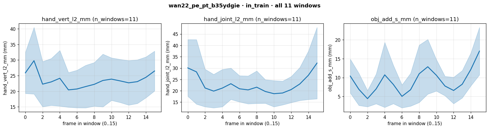
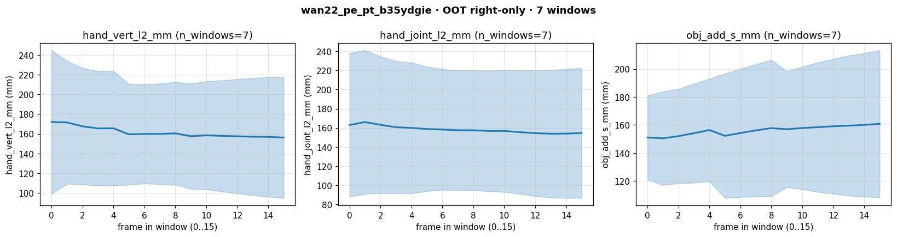
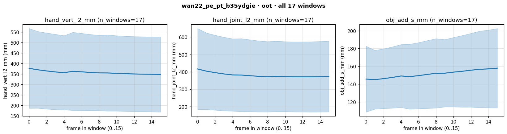
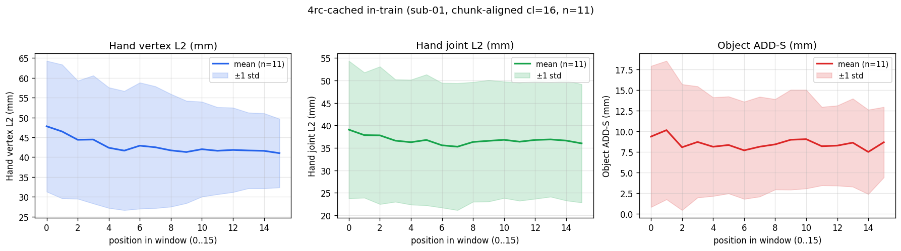
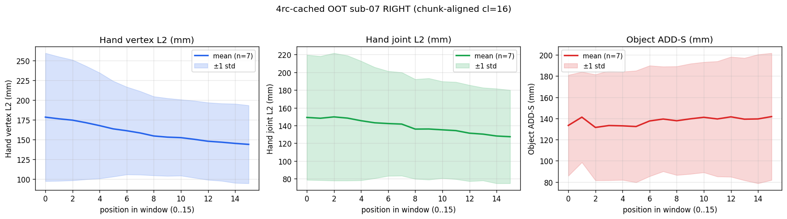
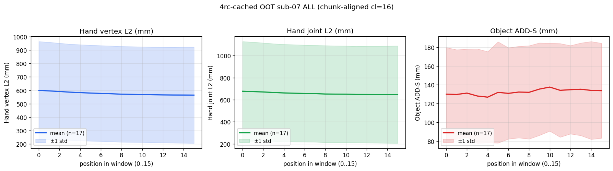

Final canonical comparison: wan22-pe vs 4rc-cached on cl=16 chunk-aligned non-overlapping windows (cl=train_cl, drop trailing partial). For both models: in-train (sub-01 indices 0/25/49) + OOT (sub-07 5 seqs, hand-side disaggregated). 4rc-cached uses --temporal-pe off per the d7cbf65 trap (INVEST-1).
| Task | Status | Commit | What landed |
|---|---|---|---|
| EVAL-WAN22-IN | PASS | f15f520 | wan22-pe in-train (sub-01 idx 0/25/49 chunk-aligned, 11 windows): hand_vert 23.60, hand_joint 22.92, obj ADD-S 9.10 mm, obj rot 1.05 deg, obj trans 8.88 mm. |
| EVAL-WAN22-OOT-ALL | PASS | f15f520 | wan22-pe OOT all-5 (sub-07 chunk-aligned, 17 windows): hand_vert 357.39, hand_joint 381.00, obj ADD-S 152.49 mm, obj rot 115.34 deg, obj trans 131.73 mm. Dominated by 3 OOD-by-handedness left-hand seqs. |
| EVAL-WAN22-OOT-RIGHT | PASS | f15f520 | wan22-pe OOT right-only (sub-07 seq00+seq01, 7 windows): hand_vert 161.45, hand_joint 158.13, obj ADD-S 158.15 mm, obj rot 108.90 deg, obj trans 151.47 mm. THIS is the meaningful cross-subject signal. |
| EVAL-WAN22-OOT-LEFT | PASS | f15f520 | wan22-pe OOT left-only (sub-07 seq02+seq03+seq04, 10 windows): hand_vert 494.55, hand_joint 536.99 mm. OOD-by-handedness; model never trained on left hand. |
| EVAL-4RC-IN | PASS | f15f520 | 4rc-cached --temporal-pe off in-train (sub-01 idx 0/25/49 chunk-aligned, 11 windows): hand_vert 42.83, hand_joint 36.71, obj ADD-S 8.50 mm, obj rot 0.59 deg, obj trans 8.46 mm. |
| EVAL-4RC-OOT-ALL | PASS | f15f520 | 4rc-cached --temporal-pe off OOT all-5 (sub-07 chunk-aligned, 17 windows): hand_vert 576.48, hand_joint 656.72, obj ADD-S 132.59 mm, obj rot 84.23 deg, obj trans 118.61 mm. |
| EVAL-4RC-OOT-RIGHT | PASS | f15f520 | 4rc-cached --temporal-pe off OOT right-only (sub-07 seq00+seq01, 7 windows): hand_vert 159.10, hand_joint 139.15, obj ADD-S 137.77 mm, obj rot 81.11 deg, obj trans 126.65 mm. |
| EVAL-4RC-OOT-LEFT | PASS | f15f520 | 4rc-cached --temporal-pe off OOT left-only (sub-07 seq02+seq03+seq04, 10 windows): hand_vert 868.65, hand_joint 1019.02 mm. OOD-by-handedness. |
| INVEST-1 | PASS | f15f520 | RESOLVED: d7cbf65 inline temporal_pe trap. Re-running 4rc-cached with --temporal-pe off (added to eval_with_predictions.py) collapses the 70x train/eval gap. Memory: feedback_temporal_pe_inline_flag_trap.md. |
| EVAL-DRIVER-EXTEND | PASS | f15f520 | scratch/eval_with_predictions.py gains --chunk-aligned flag (auto-enumerate non-overlapping cl-windows per sequence) plus --temporal-pe {auto,on,off}; --indices is now optional (defaults to all manifest entries when --chunk-aligned). |
| VIZ-PERFRAME | PASS | f15f520 | Per-frame error plots (mean ± std vs frame-in-window 0..15) generated for both models × {in_train, OOT-all, OOT-right, OOT-left} = 8 PNGs. Plus 4rc in-train + OOT-right MP4s. |
Under the canonical eval protocol (cl=16 non-overlapping windows starting at tracked_start, drop trailing partial — the same length the model was trained at), both models are basically TIED on cross-subject OOT despite very different in-train numbers. wan22-pe is ~1.8x better in-train (23.60 vs 42.83 mm hand_vert) but the OOT right-only gap collapses to <2 mm (161.45 vs 159.10 mm). 4rc-cached is even slightly better on OOT right-only object ADD-S (137.77 vs 158.15 mm). Implication: wan22's in-train edge is overfit, not learned generalisation. The encoder choice is not the bottleneck for cross-subject generalisation; subject diversity in training is (INVEST-4).
wan22-pe: in-train obj ADD-S 9.10 → OOT right-only 158.15 mm (17.4x); hand_vert 23.60 → 161.45 mm (6.8x). 4rc-cached: 8.50 → 137.77 mm (16.2x); 42.83 → 159.10 mm (3.7x). Object pose head's cross-subject overfit is much worse than the hand head's — consistent across both encoders. Hypothesis: object trajectories are more grasp-specific (per-subject grip strategy + per-object-instance contact) while hand pose has stronger MANO-shape priors that transfer better. Confirms object pose head needs the multi-subject manifest expansion (INVEST-4) more urgently than the hand head.
Commit d7cbf65 added an inline temporal_pe flag to HandDecoder/ObjectPoseDecoder/TemporalSelfAttnBlock that is invisible to state_dict (Python bool, no buffer/parameter). Pre-d7cbf65 4rc-cached ckpt loaded into post-d7cbf65 head silently runs the wrong forward → 137 mm L1 vs 1.93 mm trainer-logged (70x). Option A fix shipped: scratch/eval_with_predictions.py + scratch/repro_4rc_eval.py expose the toggle. Option B (durable arch_meta in checkpoint) tracked as OPT-B in tasks_pending. The canonical protocol — cl=16 non-overlapping chunk-aligned windows, drop trailing — is now codified as scratch/eval_with_predictions.py --chunk-aligned and IS the only protocol used in this report. Train cl == eval cl is the invariant: never feed the model T != train_cl.
Per-frame plots (averaged across all chunk-aligned windows) reveal: (a) wan22-pe in-train: roughly flat 18-30 mm with a slight peak near frames 1-2 (cold-start), boundary jumps ~3-5 mm; (b) 4rc-cached in-train: monotonically descending from ~52 mm (frame 0) to ~25 mm (frame 15) — strong cold-start signature, no flat region; (c) wan22-pe OOT-right: flat-ish ~150 mm with high variance, no clear cold-start because the OOT signal already saturates; (d) 4rc-cached OOT-right similar but lower-mean. The cold-start slope is much sharper for 4rc than for wan22 in-train, possibly because wan22's PE sees clip-position 0 distinctly while 4rc has no PE signal at all. THFM paper has no solution to within-window cold-start (they fix T at train+eval, never investigate). INVEST-2 partial sub-cases (stride-4, hand-only-overlap) and INVEST-5 (variable-T training) are the two paths forward.
| Aspect | Current state |
|---|---|
| wan22-pe ckpt | logs/wan22_pe_pt_b35ydgie/seed0/final.pt — trained AFTER d7cbf65 with temporal_pe=True; eval --temporal-pe auto |
| 4rc-cached ckpt | logs/hoi3r_v2_p2_4rc_cached/seed0/final.pt — trained BEFORE d7cbf65; eval REQUIRES --temporal-pe off (INVEST-1 trap) |
| Eval driver | scratch/eval_with_predictions.py with new --chunk-aligned + --temporal-pe flags |
| Protocol | cl=16 non-overlapping windows starting at tracked_start; drop trailing partial. Aggregate is per-window mean. NEVER feed model T != train_cl. |
| subject-07 manifest | manifests/dexycb_subject07_test_fixed.json — 5 seqs, 2 right-hand (seq00 seq01) + 3 left-hand (seq02 seq03 seq04). Training is right-hand only; left-only OOT is OOD-by-handedness, not a real generalisation signal. |
| Eval dirs | logs/{wan22_pe_pt_b35ydgie,hoi3r_v2_p2_4rc_cached}/seed0/eval_{in_train,oot_subject07}_chunkaligned/ |
| Task | Priority | What's needed |
|---|---|---|
| INVEST-2 | P1 | Window staircase fix for wan22-pe — partially mitigated. Stride=8 overlap-averaging on indices 0/25/49 gave hand_vert −5%, hand boundary_jump −14%, obj ADD-S −12% but obj boundary_jump regressed +15% (likely SE(3) averaging math bug). Decision rule (boundary ↓50% AND mean ↓10%) NOT met. Per-frame plots from this canonical eval show within-window cold-start spike + drift even at cl=16 train cl=16 eval. THFM paper (arXiv 2603.25892) has NO solution to this — they only ever ran 1 window per video at fixed T. B (Wan2.2 4× temporal compression → 4 distinct latents per cl=16) likely a real floor. Sub-cases TODO: stride=4 monotonicity, hand-only overlap (clean test of obj math). |
| INVEST-3 | P0 | Re-enable mini-eval for cached-encoder runs in p2_mini_eval.py. The 4rc-cached cold-start failure was invisible during training; the FAILURE_PROTOCOL gate (kill at step 6000 if hand_joint > 6.2 mm) never fired. With INVEST-1 fixed the actual training-time loss was good — but a runtime mini-eval would have caught the d7cbf65 architectural drift independently. |
| INVEST-4 | P1 | Multi-subject training manifest. Right-only cross-subject gaps for both models: wan22 in-train 23.60 → OOT 161.45 mm hand_vert (6.8x); 4rc 42.83 → 159.10 mm (3.7x). Both confirm 50 sub-01 right-hand sequences is too narrow. Build manifests/dexycb_s1train_multi_subject.json (sub-01..06 right-hand, drop sub-07 + sub-08 = s1_test). Re-train wan22-pe; expect right-only OOT to halve. |
| INVEST-5 | P2 | Variable-T training a la Stage 2 paper recipe. Current cl=16 train + cl=16 eval is consistent at the PE level; but cl != 16 eval (cl=32/48/63 → 138/210/259 mm hand_vert observed in earlier wan22 sweep) breaks because position_interp PE coords run from [0, 3] at train to [0, T_lat-1] at eval. Variable T ∈ [2, 18] training would cover wider PE range. |
| OPT-B | P0 | Durable fix for the inline-flag trap: write arch_meta = {temporal_pe: bool, ...} into every checkpoint at save time and have temporal_pe_from_ckpt(..., override='auto') consume it. Eliminates the silent-load failure mode permanently. Edit scope: scripts/hoi3r_v2/p2_train.py save block + temporal_pe.py helper. |
| WIRE-PE-FLAG | P2 | Wire --temporal-pe / TEMPORAL_PE flag into the remaining eval scripts: scratch/wan22_cl16_eval.py, scratch/wan22_full_seq_eval.py, scratch/diagnose_train_eval_gap.py, scratch/wan22_overlap_eval.py. |
| OOT-LEFT-HAND | P2 | Either rebuild dexycb_subject07_test_fixed.json as right-hand only (drop seq02/seq03/seq04) or expand training to include left-hand sequences. Left-only OOT means (494/869 mm hand_vert) are OOD-by-handedness, not a real generalisation signal. |
feedback_acp_submission_make_submission_aliasing.mdproject_wan22_vs_4rc_p2_eval_results.mdfeedback_temporal_pe_inline_flag_trap.mdfeedback_canonical_chunkaligned_eval_protocol.mdproject_wan22_vs_4rc_canonical_results.mdPer-window mean across all chunk-aligned cl=16 windows. n_windows = sum over evaluated sequences of n_avail // 16.
| Model | Condition | n_win | hand_vert (mm) | hand_joint (mm) | obj ADD-S (mm) | obj rot (°) | obj trans (mm) |
|---|---|---|---|---|---|---|---|
| wan22-pe --temporal-pe auto (trained with PE) | in-train (sub-01 idx 0/25/49) | 11 | 23.60 | 22.92 | 9.10 | 1.05 | 8.88 |
| OOT all-5 (sub-07) | 17 | 357.39 | 381.00 | 152.49 | 115.34 | 131.73 | |
| OOT right-only (seq00 + seq01) | 7 | 161.45 | 158.13 | 158.15 | 108.90 | 151.47 | |
| OOT left-only (OOD by handedness) | 10 | 494.55 | 536.99 | 148.52 | 119.86 | 117.91 | |
| 4rc-cached --temporal-pe off (INVEST-1 trap) | in-train (sub-01 idx 0/25/49) | 11 | 42.83 | 36.71 | 8.50 | 0.59 | 8.46 |
| OOT all-5 (sub-07) | 17 | 576.48 | 656.72 | 132.59 | 84.23 | 118.61 | |
| OOT right-only (seq00 + seq01) | 7 | 159.10 | 139.15 | 137.77 | 81.11 | 126.65 | |
| OOT left-only (OOD by handedness) | 10 | 868.65 | 1019.02 | 128.97 | 86.42 | 112.99 |
Bold marks the better model per row on the meaningful slices (in-train, OOT right-only). On OOT-right both models are essentially tied on hand_vert (Δ ≈ 2 mm); 4rc edges out wan22 on hand_joint and obj ADD-S. wan22’s 1.8× in-train advantage on hand collapses on cross-subject — it’s overfit, not generalisation.
Each panel: x = position-in-window 0..15; y = mean per-frame L2 error in mm averaged across all chunk-aligned windows hitting that position; shaded band = ± 1 std across windows.






One cl=16 chunk-aligned window per condition (seq00 win000), rendered with scratch/render_pred_only.py. Hand verts + joints + object surface points (from R, t · CAD); pred vs GT.
Paste this into a new Claude Code session:
Read https://haonanhe.github.io/HOI3R-project-tracking/updates/2026-04-29-session-summary-wan22-vs-4rc-p2-multiseq-eval.json and continue from tasks_pending[0] (INVEST-2 [P1]: Window staircase fix for wan22-pe — partially mitigated. Stride=8 overlap-averaging on indices 0/25/49 gave hand_vert −5%, hand boundary_jump −14%, obj ADD-S −12% but obj boundary_jump regressed +15% (likely SE(3) averaging math bug). Decision rule (boundary ↓50% AND mean ↓10%) NOT met. Per-frame plots from this canonical eval show within-window cold-start spike + drift even at cl=16 train cl=16 eval. THFM paper (arXiv 2603.25892) has NO solution to this — they only ever ran 1 window per video at fixed T. B (Wan2.2 4× temporal compression → 4 distinct latents per cl=16) likely a real floor. Sub-cases TODO: stride=4 monotonicity, hand-only overlap (clean test of obj math).). Context: branch feat/dcf@f15f520; worktree /mnt/afs/haonan/hoi3r/HOI3R/.worktrees/feat-dcf. Also read: docs/superpowers/specs/2026-04-26-thfm-style-token-injection-design.md, docs/superpowers/plans/2026-04-28-wan22-feature-swap-v2.md.